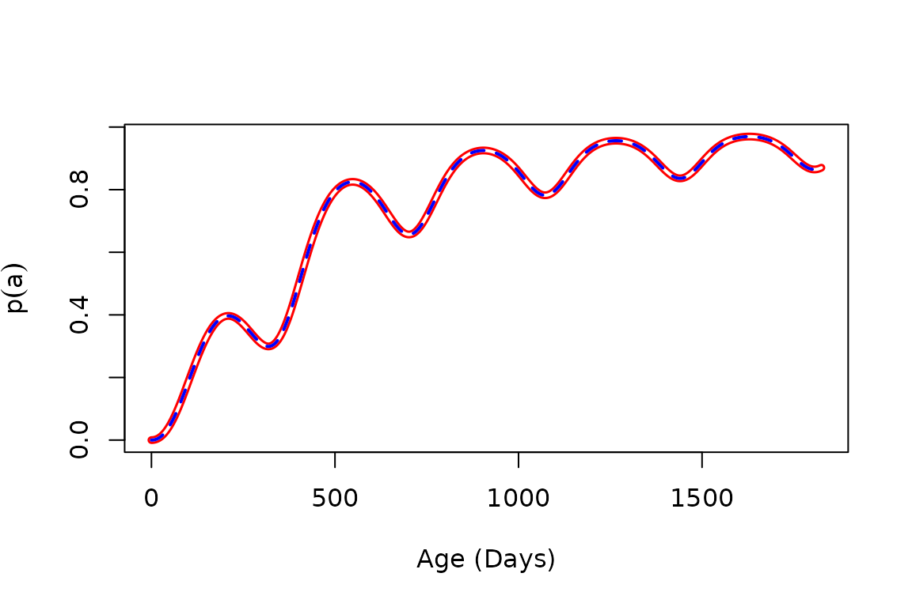
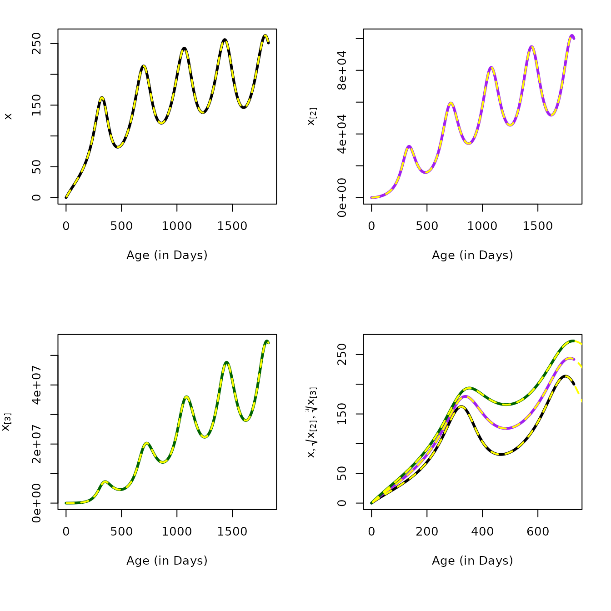
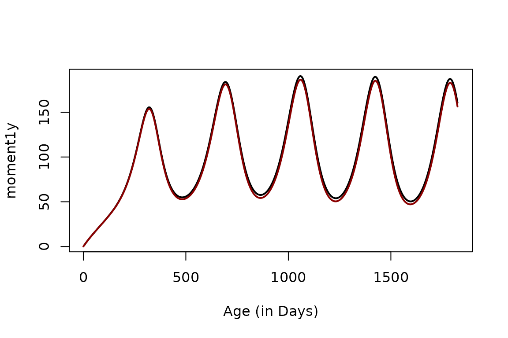

Hybrid Models
Hybrid.RmdIntroduction
In the following, we review hybrid models for the MoI, make a brief observation about prevalence, and then derive hybrid variables for the mean and higher order moments for the AoI.
MoI
The random variable describes the distribution of the MoI in a population, which follows a Poisson. Here, we provide a numerical demonstration that this novel computational approach is equivalent to the queuing model , and that it is also equivalent to hybrid models for the multiplicity of infection (Nåsell, I. 1985)1:
Elsewhere, the dynamics of MoI have be described using the queuing model . The MoI increases with the FoI, and each parasite can clear at some rate, . The following is a diagram for the changes in the fraction of the population with MoI , denoted , change in a host cohort with the force of infection and with clearance.
$$\begin{equation} \begin{array}{ccccccccc} \zeta_0 & {h\atop \longrightarrow} \atop {\longleftarrow \atop r} & \zeta_1 & {h\atop \longrightarrow} \atop {\longleftarrow \atop {2r}} & \zeta_2 & {h \atop \longrightarrow} \atop {\longleftarrow \atop {3r}} & \zeta_3 & {h \atop \longrightarrow} \atop {\longleftarrow \atop {4r}}& \ldots \end{array} \end{equation}$$
The master equations for
are:
While the master equations describe an infinite set of equations, to find numerical solutions, we must solve a finite set of equations. We need to compute a maximum MoI that has a vanishingly small portion of the distribution. For a constant , the steady state distribution of is Poisson with mean If we set the tail is negligible. Here, we set the range to and plot the portion of the distribution covered.
We must define a trace FoI function.
To verify it works, we compute the MoI each day for the first three years of life.
solveMMinfty(3/365, foiP3) -> outWe peek at the distribution of MoI = on day 500:
Nåsell’s Hybrid Model
We can also solve the hybrid equation to get the mean MoI (Nåsell, I. 1985):
The unction dmda computes the derivative, and we can
solve the hybrid equation using solve_dm and plot the
output:
solve_dm(3/365, foiP3) -> mt
plot(mt$time, mt$m, type = "l",
xlab = "Age (in Days)", ylab = expression(m[tau](a)))Numerical Verification
We have presented three ways of computing the mean MoI using in a cohort as it ages for an arbitrary function :
- Using
meanMoIwhich integrateszda:
By solving the queuing model , a compartmental model that tracks the full distribution of the MoI, and then competing the mean:
By solving a hybrid model tracking the mean MoI.
aa = 0:1825
v1 = meanMoI(aa, foiP3, hhat=5/365)
v2 = solveMMinfty(5/365, foiP3, Amax=1825)$m
v3 = solve_dm(5/365, foiP3, Amax=1825)[,2]The following plots all three on the same graph using different colors with different widths, colors, and patterns:
par(mfrow = c(2,2))
plot(aa, v1, type = "l", col = "red", lwd=4,
xlab = "Age (in Days)",
ylab = expression(m[tau](a)),
main = "meanMoI")
plot(aa, v2, type = "l", lwd=2,
xlab = "Age (in Days)",
ylab = expression(m[tau](a)),
main = "solveMMinfty")
lines(aa, v2, type = "l", col = "yellow", lwd=2, lty=2)
plot(aa, v3, type = "l", col = "darkblue", lwd=1,
xlab = "Age (in Days)",
ylab = expression(m[tau](a)),
main = "solve_dm")
plot(aa, v1, type = "l", col = "red", lwd=4,
xlab = "Age (in Days)",
ylab = expression(m[tau](a)),
main = "All Three")
lines(aa, v2, type = "l", col = "yellow", lwd = 2)
lines(aa, v3, type = "l", col = "darkblue", lwd = 2, lty =2)
the maximum errors are on the order of
## [1] 2.511903e-09 1.790373e-13 2.511903e-09We have developed a hybrid model that we can use to compute the mean and higher order moments for the age of infection (AoI). In a related vignette (AoI), we define the AoI as a random variable and develop functions to compute its moments. Here, we develop a notation for the moments:
Prevalence
George Maccdonald published a model of superinfection in 19502. In presenting the model, Macdonald was trying to solve a problem: if super-infection was possible, then how long would it take until a person would clear all of the parasites to become uninfected again? Macdonald proposed a solution, but there was a problem with the mathematical formulation (An essay by Paul Fine, from 1975, is recommended reading)3: the model that Macdonald described didn’t match the function he used. In a model formulated as part of the Garki project (Dietz K, et al., 1974)4, the model allowed for superinfection and proposed a useful approximating model. One solution came from taking a hybrid modeling approach (Nåsell I, 1985)5, which we have just discussed.
Nåsell showed that the distribution of the MoI would converge to a Poisson distribution:
Since is the mean of a Poisson, the prevalence of infection is the complement of the zero term:
It is, nevertheless, sometimes useful to know the clearance rate, a transition from MoI = 1 to MoI=0. Clearance from the infected class can only occur if a person is infected with an MoI of one, and if that infection clears:
The change in prevalence is thus described by the equation:
While this is interesting, and while it solves the problem of modeling clearance under superinfection, the equation depends on . Since we can compute directly from , the equation is redundant.
Code exists in ramp.falciparum to compute prevalence in
three ways:
Using the function
truePRUsing the hybrid equations
solve_dpdaFrom the hybrid model
solve_dmand

AoI - Hybrid Variables
Let x is the first moment of the AoI in a cohort at age , conditioned on a history of exposure, given by a function . In longer form: Here, we show that:
Similarly, we let denote the higher order moments of the random variable . In longer form: We show that higher order moments can be computed recursively:
In the following, we first demonstrate that the hybrid equations give the same answers as direct computation of the moments.
Solving
The function solve_dAoI computes the first three moments
of the AoI by default. Here we plot the
root of the first three moments.
par(mar = c(7, 4, 2, 2))
solve_dAoI(5/365, foiP3) -> mt
plot(mt$time, mt$xn1, type = "l", xlab = "Age (in Days)", ylab = expression(list(x, sqrt(x[paste("[2]")]), sqrt(x[paste("[3]")], 3))), ylim = range(mt$xn3^(1/3)))
lines(mt$time, mt$xn2^(1/2), col = "purple")
lines(mt$time, mt$xn3^(1/3), col = "darkgreen") 
Numerical Verification
aa = seq(5, 5*365, by = 5)
moment1 = momentAoI(aa, foiP3)
moment2 = momentAoI(aa, foiP3, n=2)
moment3 = momentAoI(aa, foiP3, n=3)- By solving a hybrid model with variables that track the moments, using the equations that we derived above:
solve_dAoI(5/365, foiP3, Amax = 5*365, dt=5) -> mt
par(mfrow = c(2,2), mar = c(7, 4, 2, 2))
# Top Left
plot(mt$time, mt$xn1, type = "l", xlab = "Age (in Days)", ylab = expression(x), lwd=3)
lines(aa, moment1, col = "yellow", lwd=2, lty=2)
# Top Right
plot(mt$time, mt$xn2, type = "l", xlab = "Age (in Days)", ylab = expression(x[paste("[2]")]), lwd=3, col = "purple")
lines(aa, moment2, col = "yellow", lwd=2, lty=2)
plot(mt$time, mt$xn3, type = "l", lwd=3, col = "darkgreen",
xlab = "Age (in Days)", ylab = expression(x[paste("[3]")]))
lines(aa, moment3, col = "yellow", lwd=2, lty=2)
par(mar = c(7, 4, 2, 2))
solve_dAoI(5/365, foiP3) -> mt
plot(mt$time, mt$xn1, type = "l", xlab = "Age (in Days)", ylab = expression(list(x, sqrt(x[paste("[2]")]), sqrt(x[paste("[3]")], 3))), lwd=3, ylim = range(mt$xn3^(1/3)))
lines(mt$time, mt$xn2^(1/2), col = "purple", lwd=3)
lines(mt$time, mt$xn3^(1/3), col = "darkgreen", lwd=3)
lines(aa, moment1, col = "yellow", lwd=2, lty=2)
lines(aa, moment2^(1/2), col = "yellow", lwd=2, lty=2)
lines(aa, moment3^(1/3), col = "yellow", lwd=2, lty=2)
AoY - Hybrid Variables
Let denote the first moment of the AoY.
A differential equation for is:
Where computes the probability that an infection with MoIincreases with a loss.
To verify, we can compute the moment directly. The function
solve_dAoYda gives solutions:
solve_dAoYda(5/365, foiP3, Amax=5*365, dt=5, n=9) -> mtThe moments can be computed directly using momentAoY
moment1y = momentAoY(aa, foiP3, hhat=5/365)The following plots the first moment computed both ways:

Nåsell, I. (1985). Transmission Models for Malaria. In: Hybrid Models of Tropical Infections. Lecture Notes in Biomathematics, vol 59. Springer, Berlin, Heidelberg. https://doi.org/10.1007/978-3-662-01609-1_3↩︎
G Macdonald (1950). The analysis of infection rates in diseases in which superinfection occurs. Trop. Dis. Bull. 47, 907–915.↩︎
Fine PEM (1975). Superinfection - a problem in formulating a problem. Tropical Diseases Bulletin 75, 475–488↩︎
Dietz K, Molineaux L, Thomas A (1974). A malaria model tested in the African savannah. Bull. Wld. Hlth. Org. 50, 347–357.↩︎
Nåsell I (1985). Hybrid Models of Tropical Infections, 1st edition. Springer-Verlag. https://doi.org/10.1007/978-3-662-01609-1↩︎